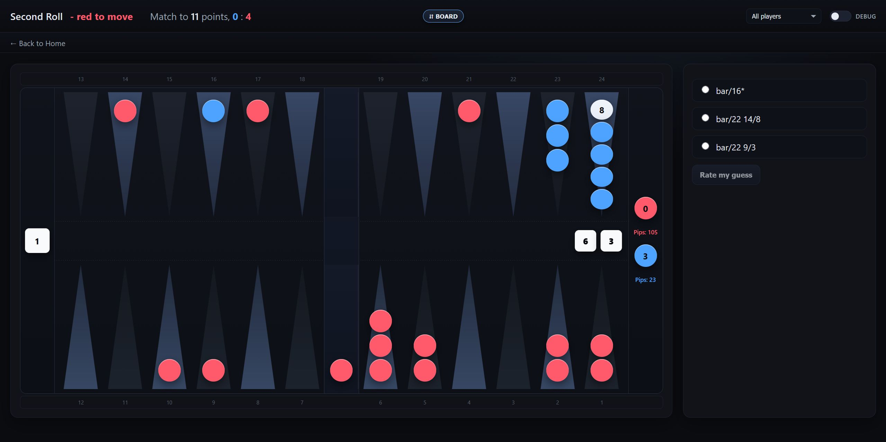

Second Roll is a learning tool for DailyGammon players who want to improve their backgammon skills. The app analyzes your past games on DailyGammon, finds positions where you made mistakes (called “blunders”), and creates personalized quizzes to help you learn from those mistakes.
Think of it as a personal backgammon coach that shows you the exact positions where you went wrong and asks you: “What would you do now?”
When you first open Second Roll, you’ll see a login screen asking for your DailyGammon credentials.
Important: Your login information is stored securely and is only used to fetch your games from DailyGammon.
After logging in, you’ll see three main buttons:
Need to change your login? Click “Update DailyGammon login” at the bottom of the home screen anytime.
When you’re ready to create quiz questions from your recent games:
The app will: - Download your recent games from DailyGammon - Analyze each position using computer analysis (GNU Backgammon) - Find positions where you (or your opponents) made mistakes - Create quiz questions from those positions
This process can take time - analyzing matches thoroughly takes several minutes per game. The more days you select, the longer it will take. If you wish, go back by using the “Back to home” link in the top area, and select statistics to see how many quizzes have been added. As soon as a quiz has been added you can start quizzing, while more quizzes will be added in the background.
While the analysis runs, you’ll see: - Matches: Shows how many games have been analyzed (e.g., “5/12” means 5 out of 12 games completed) - Quizzes added: New quiz questions created from this analysis session - Total quizzes: Your complete quiz question library - Progress bar: Visual indicator of completion - Log window: Detailed information about what’s happening
PLEASE NOTE: I have recently seen that this progress is not shown properly. As soon as I finish more games I can check this. If you don’t see progress, don’t fret. The quizzes will be added.
This is the heart of the app. Click “Take the Quiz” from the home screen.
Click on the thumbnails to see the full size images. The images describe all the UI elements of the quiz interface.
When you open a quiz, you’ll see:
The board displays: - Blue checkers (Player 1) - moving clockwise - Red checkers (Player 2) - moving counterclockwise - Point numbers - Shown from the perspective of whichever player is on roll. - The bar - The vertical divider in the middle (where hit checkers go) - Bear-off area - Right side, showing how many checkers each player has borne off - Pip count - Total distance remaining for each player (lower is better) - The cube - Left side, showing the doubling cube value and who owns it
Tip: If the board orientation feels backwards to you, click the “⇵ Board” button at the top to flip it vertically.
The numbers on the board change based on whose turn it is. This matches how backgammon players think: - Your 1-point is always your home board point closest to bearing off - Your 24-point is always the furthest point from bearing off - When Blue is on roll, you see Blue’s point numbers - When Red is on roll, you see Red’s point numbers
After you submit your answer, you’ll see:
About Equity: - Positive equity (like +0.543) means you’re winning by that many points on average - Negative equity (like -0.234) means you’re losing by that many points - The difference shows how many points you lose by making a worse move - Example: If the best move is +0.500 and your move is +0.200, you’ll see “(-0.300)” next to your move - meaning you lost 0.3 points of equity
After seeing the answer, a “View on DailyGammon” button appears. Click it to see: - The complete game this position came from - All the moves before and after this position - Your opponent’s name and the final result
This is helpful for understanding the context of the position.
Click “Next” to get another quiz question. The app uses a smart system: - Questions you answer correctly appear less frequently - Questions you miss appear more often - This helps you focus on positions that challenge you most
At the top of the quiz page, you’ll see a dropdown menu that says “All players”.
Usually you will select your name there, to learn from your own mistakes.
But if you’re curious, or want to look at the mistakes of a specific opponent (maybe a very strong one) then select the respective name.
Note: The opponent list shows everyone you’ve played against in your analyzed games.
Click “Statistics” from the home screen to see your progress.
Below your statistics, you’ll see a list of quiz positions that give you the most trouble. Each entry shows: - The best move for that position - Your success rate on that specific position - How many times you’ve attempted it
Why This Is Helpful: These are your weak spots! Click on any position to practice it again immediately.
Throughout the app, colors have consistent meanings:
The board automatically adjusts so the player on roll is always shown from their perspective.
Don’t analyze 60 days of games on your first session. Start with 7-14 days to get a feel for the app.
Taking a few quizzes daily is more effective than cramming. Make it part of your backgammon routine.
When you miss a question, try to understand why the best move is better. Look for patterns: - Is it about timing? - Is it about flexibility? - Is it about race calculations? - Is it about avoiding getting hit?
After seeing the answer, check the full game on DailyGammon. Understanding what happened before and after the position gives valuable context.
Review your statistics page regularly to see which types of positions trouble you most.
As you play more games on DailyGammon, run “Add New Quizzes” again to get fresh material. Your game evolves, so your mistakes will too!
Some mistakes are clear-cut with only a few reasonable alternatives. The app includes: - The best move (what you should have played) - Your actual move (what you did play) - Up to two alternatives (other reasonable options)
If some of these are the same move, you’ll see fewer options.
The analysis is done by GNU Backgammon, one of the strongest backgammon programs in the world. While no computer is perfect: - The equity differences are usually accurate to within 0.01 points - If you consistently disagree, study why the computer prefers its move - Understanding computer-optimal play will improve your game significantly
What you can do if you want to understand the best move better: Get BGBlitz and use it to analyze this position. BGBlitz is not free but worth the money. 1. Click the “View on Dailygammon” button. 2. In DailyGammon, click on “List of moves” 3. Copy the URL to the clipboard (click on the URL in your browser, then CTRL-C / Command-C) 4. Start BGBlitz 5. Immediately type CTRL-V / Command-V. BGBlitz will analyze the match 6. In DailyGammon look for the match standing, the roll etc to find the move. It should be marked as red in BGBlitz’s move list because it is a blunder.
Quality backgammon analysis requires: - Downloading each game’s complete move list from DailyGammon - Having the computer evaluate every position where a mistake occurred - Comparing your move to all legal alternatives - Finding sample moves that are better and worse than yours
This thoroughness ensures you get meaningful learning material, but it takes time.
This means you don’t have any quiz questions yet. Click “Add New Quizzes” first to create questions from your games.
These are not implemented yet.
Nackgammon is not supported yet.
Sorry, also not supported yet.
Because this is a multiple choice quiz :-) (I miss this feature as well, maybe someday…)
Here are terms used throughout the app:
Currently, the app does not support keyboard shortcuts. All interactions require mouse/touch input.
Second Roll works best in modern web browsers: - Chrome
- Firefox - Safari - Edge
Make sure your browser is up to date for the best experience.
Only you can see your quiz questions and statistics. Each user has their own private database of positions.
I am developing this app for fun, because I want to use it, and to give something back to the DailyGammon community. I am not interested in making money, and never will. I will not sell your data. The app will not show ads.
If you’re a total privacy nut and want to know for sure: have a look at the source code: https://github.com/kagsteiner/GreatestBGHits
The app was developed with massive help of AIs - Cursor + ChatGPT 5 + Claude Sonnet / Opus 4 and later. I have checked that it is okay (and fixed a few bugs by hand). This document was also written by Claude 4.5 Sonnet, and reviewed / enhanced by me.
If you encounter problems:
Remember: Every mistake is a learning opportunity. The positions in these quizzes are from your real games, which means they represent the exact situations where you can improve most.
Don’t get discouraged if your correctness rate starts low - that’s normal! As you practice, you’ll see patterns emerging, and your decision-making will improve.
Good luck, and may your blunders become victories!
This documentation is for the Second Roll backgammon training app. For DailyGammon support, visit dailygammon.com.